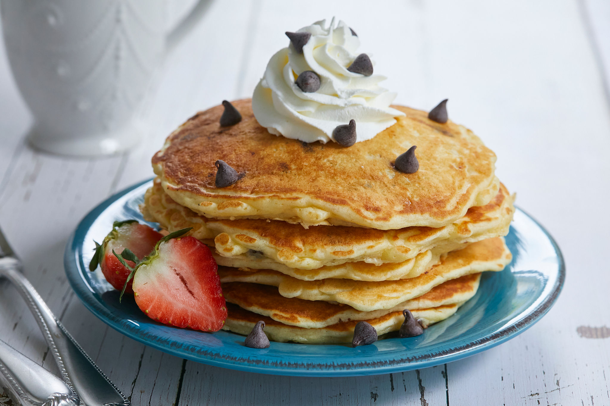

Chocolate Chip Pancakes

Description
This is my go to recipe for chocolate chip pancakes. The pancake come out super fluffy and the whole family loves them. Add as many chocolate chips as you like. Can easily be doubled or tripled. Serve with maple syrup if you like.
Ingredients
- 3/4 cup milk
- 2 tablespoon white vinegar
- 1 cup all-purpose flour
- 2 tablespoons white sugar
- 1 teaspoon baking powder
- 1/2 teaspoon baking soda
- 1/4 teaspoon salt
- 1 large egg
- 2 tablespoons unsalted butter, melted
- 1 teaspoon vanilla extract
- 1/2 cup miniature chocolate chips, or more to taste
- cooking spray
Directions
- Combine milk and vinegar in a bowl and set aside for 5 minutes to "sour" the milk. You are essentially making your own buttermilk with this step.
- Combine flour, sugar, baking powder, baking soda, and salt in a large bowl.
- Whisk egg, butter, and vanilla extract into "soured" milk until combined. Pour flour mixture into the wet ingredients and whisk until just combined. Fold in chocolate chips. Batter will be thick. Allow batter to rest for 5 minutes.
- Heat a large skillet over medium-low heat, and coat with cooking spray.
- Pour about 1/4 cup of batter for each pancake onto the skillet. Cook until bubble appear on the surface, 2-4 minutes. Flip pancake with a spatula, and cook until browned on the other side. 2-3 more minutes. Repeat with remaining batter. Serve immediately.
Cook's Note:
You can also sprinkle the chocolate chips on top once the pancakes are on the griddle instead of folding them into the batter - that way you can adjust the amount of chocolate chips per pancake.
Instead of chocolate chips, you can add sprinkles, blueberries, or caramel chips as well.